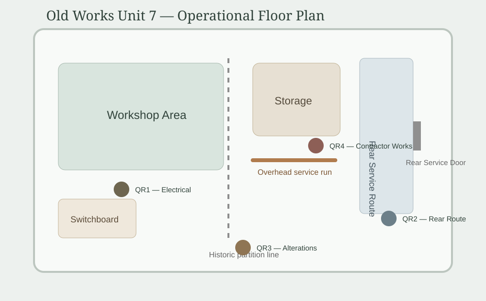

Portfolio Site
Old Works Unit 7
Legacy workshop building with evolving infrastructure, inherited alterations and operational constraints requiring managed oversight.
View Old Works Unit 7 tenant / lease plan

Operational Areas
5 Active
Historic Alterations
Partial Records
Compliance Reviews
2 Pending
Building Constraints
Ongoing Monitoring
Site Context
Building Overview
- Legacy workshop building Operational unit adapted across multiple occupancy periods and infrastructure changes
- Historic alterations Partial records exist for electrical additions, internal partitioning and older service routes
- Evolving operational use Workshop, storage and light fabrication activities require ongoing coordination and review
Operational Reality
Current Constraints
- Older electrical infrastructure Historic additions and phased modifications require ongoing verification
- Restricted internal access Some operational routes and service points limited by original building layout
- Partial building records Historic alterations not always reflected in current operational drawings
- Shared service awareness Utility and safety responsibilities require coordination between occupiers and estate management
Building Fabric
Inherited Building Conditions
- Old switchboard location Access must remain clear; replacement assessment due before next major works
- Former internal partition line Historic alteration noted but not fully reflected in current layout records
- Rear service door Known sticking point; usable but monitored during fire route checks
- Overhead service run Clearance restriction applies to stored materials and contractor access
Compliance Controls
Review Actions
- Verify electrical additions before further tenant works
- Keep rear service route clear and record inspection outcome
- Update layout notes when historic alterations are confirmed
- Check signage and frontage requests against estate standards
- Escalate building-fabric issues that affect access, safety or responsibility
Operational Memory
Inherited Site Knowledge
- Rear service door Requires firm closure during wet weather due to frame movement
- Workshop loading area Deliveries coordinated manually due to restricted turning space outside Unit 7
- Older power circuits High-load equipment usage reviewed before temporary operational changes
- Historic storage area Legacy materials removed during previous occupancy change; monitoring retained for future works
Governance Transition
From Local Knowledge to Managed Record
- Historic practice Building knowledge previously relied on long-term occupier familiarity
- Operational change Contractor turnover and evolving compliance expectations require clearer recorded controls
- Hold role Preserves operational understanding while supporting visible governance and review
QR Governance
Operational QR Points
- Electrical switchboard QR Linked to isolation guidance and infrastructure review notes
- Rear service route QR Fire access checks and operational restriction guidance available on-site
- Building alteration QR Historic layout observations and contractor review notes maintained through Hold
- Contractor works QR Temporary operational controls and access arrangements linked to current works
Tenant View
Unit 7 Operational Notes
- Keep service access clear Rear service route and switchboard access must remain unobstructed.
- Storage height awareness Do not store materials beneath overhead service runs beyond marked safe height.
- Report building issues Door movement, electrical concerns or access restrictions should be reported through the estate contact route.
- Contractor attendance Temporary access or storage changes may apply during approved works.
View Old Works Unit 7 floor plan
Review Status
Current Monitoring
- Electrical review Older infrastructure assessment pending before additional equipment installation
- Building fabric observation Historic alterations continue to be verified during maintenance activity
- Operational access Rear service route retained under ongoing monitoring and inspection